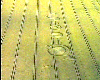

|  |
If there is an article that you want, please send a message to stuartpalmerg@gmail.com.
ID: 0000-0002-2517-0597 |
|
Journal papers Hemsley, B., Dann, S., Reddcliff, C., Smith, R. Given, F., Gay, V., Wah Leong, T., Josserand, E., Skellern, K., Palmer, S. and Balandin, S. (2022, online early) Views on the usability, design, and future possibilities of a 3D food printer for people with dysphagia: outcomes of an immersive experience, Disability and Rehabilitation. McKenzie, S., Coldwell-Neilson, J. and Palmer, S. (2021) Integrating Career Development into an Undergraduate IT Curriculum at an Australian University, Education and Information Technologies, v26, n5, pp. 5971-5990. Brunner, M., Togher, L., Palmer, S., Dann, S. and Hemsley, B. (2021), Rehabilitation Professionals’ Views on Social Media Use in Traumatic Brain Injury (TBI) Rehabilitation: Gatekeepers to Participation, Disability and Rehabilitation, v43, n14, pp. 1955-1964. Brunner, M., Hemsley, B., Togher, L., Dann, S. and Palmer, S. (2021), Social Media and People with Traumatic Brain Injury: A Meta-Synthesis of Research Informing a Framework for Rehabilitation Clinical Practice, Policy, and Training, American Journal of Speech-Language Pathology, v30, n1, pp. 19-33.Hall, W., Palmer, S., Howell, S., Javanbakht, Z, and Emerson, N. (2020), An Evaluation of an Experiential Learning Initiative in a First-Year Engineering Materials Course, Journal of Materials Education, v42, n5-6, pp. 193-202. Bodisco, T. and Palmer, S. (2020), Presentation and evaluation of a new graduate unit of study in engineering product development, Sustainability, v12, n14, 5749. Verhoeven, D., Musial, K., Palmer, S., Taylor, S., Abidi, S., Zemaityte, V. and Simpson, L. (2020), Controlling for openness in the male-dominated collaborative networks of the global film industry, PLOS ONE. v15, n6, e0234460. Brunner, M., Palmer, S., Togher, L., Dann, S. and Hemsley, B. (2020), “If I knew what I was doing on Twitter then I would use it more”: Twitter experiences and networks of people with traumatic brain injury (TBI), Brain Impairment, v21, n1, pp. 1-18. Palmer, S. and Udawatta, N. (2019), Characterising ‘Green Building’ as a Topic in Twitter, Construction Innovation, v19, n4, pp. 513-530. Young, K., Palmer, S., Binek, C., Tolson, M. and Campbell, M. (2019), Assessment-led reform: Creating a sustainable culture for WIL, Journal of Teaching and Learning for Graduate Employability, v10, n1, pp. 73-87. Brunner, M., Palmer, S., Togher, L and Hemsley, B. (2019), ‘I kind of figured it out’: The views and experiences of people with traumatic brain injury (TBI) in using social media - Self-determination for participation and inclusion online, International Journal of Language & Communication Disorders, v54, n2, pp. 221-233. Palmer, S. (2019), Visualising the Social Media Conversations of a National Information and Communication Technology Professional Association, International Journal of Human Capital and Information Technology Professionals, v10, n1, pp. 38-54. Palmer, S., Coldwell-Neilson, J. and Campbell, M. (2018), Occupational outcomes for Australian computing/information technology bachelor graduates and implications for the IT bachelor curriculum, Computer Science Education, v28, n3, pp. 280-299. Palmer, S., Young, K. and Campbell, M. (2018), Developing an institutional evaluation of the impact of Work-Integrated Learning on employability and employment, International Journal of Work-Integrated Learning, v19, n4, pp. 371-383. McKenzie, S., Coldwell-Neilson, J. and Palmer, S. (2018), Understanding the career development and employability of Information Technology students, Journal of Applied Research in Higher Education, v10, n4, pp. 456-468. Palmer, S., Campbell, C., Johnson, L. and West, J. (2018), Occupational Outcomes for Bachelor of Science Graduates in Australia and Implications for Undergraduate Science Curricula, Research in Science Education, v48, n5, pp. 989-1006. Hemsley, B., Palmer, S., Dann, S. and Balandin, S. (2018), Using Twitter to Access the Human Right of Communication for People Who Use Augmentative and Alternative Communication (AAC), International Journal of Speech-Language Pathology, v20, n1, pp. 50-58. Francucci, G., Palmer, S. and Hall, W. (2018), External Compaction Pressure Over Vacuum Bagged Composite Parts: Effect On The Quality Of Flax Fibre/Epoxy Laminates, Journal of Composite Materials, v52, n1, pp. 3-15. Brunner, M., Hemsley, B., Dann, S., Togher, L. and Palmer, S. (2018), Hashtag #TBI: A content and network data analysis of tweets about Traumatic Brain Injury, Brain Injury, v32, n1, pp. 49-63. Young, K., Palmer, S. and Campbell, M. (2017), Good WIL Hunting: Building Capacity for Curriculum Re-Design, Journal of Teaching and Learning for Graduate Employability, v8, n1, pp. 215-232. Brunner, M., Hemsley, B., Togher, L. and Palmer, S. (2017), Technology and its role in rehabilitation for people with cognitive-communication disabilities following a Traumatic Brain Injury (TBI), Brain Injury, v31, n8, pp. 1028-1043. McKenzie, S., Coldwell-Neilson, J. and Palmer, S. (2017), Informing the career development of IT students by understanding their career aspirations and skill development action plans, Australian Journal of Career Development, v26, n1, pp. 14-23. Hemsley, B., Balandin, S., Palmer, S. and Dann, S. (2017), A Call for Innovative Social Media Research in the Field of Augmentative and Alternative Communication (AAC), Augmentative and Alternative Communication, v33, n1, pp. 14-22. Palmer, S., Hall, W. and Summerscales, J. (2016), Ranking of fibre-reinforced composite plate surface finish quality by wavelet texture analysis, Insight - Non-Destructive Testing and Condition Monitoring. v58, n6, pp. 318-323. Palmer, S. (2016), Birds of a feather: The geographic interconnection of Australian universities on Twitter, Journal of Applied Research in Higher Education, v8, n1, pp. 88-100. Palmer, S., Tolson, M., Young, K. and Campbell, M. (2015), The Relationship between engineering bachelor qualifications and occupational status in Australia, Australasian Journal of Engineering Education, v20, n2, pp. 103-112. Palmer, S. (2015), Tracking Comet ISON through the Twitterspehere: Visualizing Science Communication in Social Media, International Journal of Virtual Communities and Social Networking, v7, n4, pp. 57-72. Carr, R., Palmer, S. and Hagel, P. (2015), Active learning: the importance of developing a comprehensive measure, Active Learning in Higher Education, v16, n3, pp. 173-186. Hall, W. and Palmer, S. (2015), Student Opportunities in Materials Design and Manufacture: Introducing a new Manufacturing with Composites Course, Journal of Materials Education, v37, n3-4, pp. 155-168. Brunner, M., Hemsley, B., Palmer, S., Dann, S. and Togher, L. (2015), Review of the Literature on the Use of Social Media by People with Traumatic Brain Injury (TBI), Disability and Rehabilitation, v37, n17, pp. 1511-1521. Hemsley, B., Dann, S., Palmer, S., Allan, M. and Balandin, S. (2015), “We definitely need an audience”: Experiences of Twitter, Twitter Networks, and tweet content in adults with severe communication disabilities who use augmentative and alternative communication (AAC), Disability and Rehabilitation, v37, n17, pp. 1531-1542. Palmer, S. and Hall, W. (2015), The impact of increasing course enrolment on student evaluation of teaching in engineering education, Australasian Journal of Engineering Education, v20, n1, pp. 31-40. Palmer, S. (2014), Characterizing University Library Use of Social Media: A Case Study of Twitter and Facebook from Australia, The Journal of Academic Librarianship, v40, n6, pp. 611-619. Palmer, S. (2014), Characterizing Twitter communication – A case study of international engineering academic units, Journal of Marketing for Higher Education, v24, n2, pp. 257-273. Holt, D, Palmer, S., Gosper, M., Sankey, M. and Allan, G. (2014), Framing and enhancing distributed leadership in the quality management of online learning environments in higher education, Distance Education, v35, n3, pp. 382-399. Palmer, S. and Holt, D. (2014), Development of student and academic staff perceptions of the elements of an online learning environment over time, Australasian Journal of Educational Technology, v30, n 4, pp. 375-389. Hemsley, B., Palmer, S. and Balandin, S. (2014), Tweet Reach: A Research Protocol For Using Twitter to Increase Information Exchange in People with Communication Disabilities, Developmental Neurorehabilitation, v17, n2, pp. 84-89. Palmer, S. and Hall, W. (2014), Evaluation of the robustness of surface characterisation of carbon fibre composites using wavelet texture analysis, Materials Science Forum, v773-774, pp. 234-241. Palmer, S., Holt, D., Gosper, M., Sankey, M. and Allan, G. (2013), Exploring distributed leadership for the quality management of online learning environments, European Journal of Open, Distance and E-Learning, v16, n2, pp. 61-75. Palmer, S. (2013), Characterisation of the use of Twitter by Australian universities, Journal of Higher Education Policy and Management, v35, n4, pp. 333-344. Palmer, S. and Hall, W. (2013), Objective surface evaluation of fibre reinforced polymer composites, Applied Composite Materials, v20, n4, pp. 627-637. Holt, D., Palmer, S., Munro, J., Solomonides, I., Gosper, M., Hicks, M., Sankey, M., Allan, G. and Hollenbeck, R. (2013), Leading the quality management of online learning environments in Australian higher education, Australasian Journal of Educational Technology, v29, n3. pp. 387-402. Palmer, S. (2013), Modelling engineering student academic performance using academic analytics, International Journal of Engineering Education, v29, n1, pp. 132-138. Palmer, S. and Smith, C. (2013), Updating RIGs: Including the systematic influence of online study on student evaluation of teaching, Educational Research and Evaluation, v19, n1, pp. 77-90. Palmer, S. (2012), Using quantitative and qualitative unit profiling for identifying the contribution of library resources to teaching quality, Library and Information Research, v36, n113, pp. 81-98. Palmer, S. (2012), The performance of a student evaluation of teaching system, Assessment and Evaluation in Higher Education, v37, n8, pp. 975-985. Palmer, S. (2012), Student evaluation of teaching: keeping in touch with reality, Quality in Higher Education, v18, n3, pp. 297-311. Palmer, S. and Holt, D. (2012), Trajectories of engagement: A repeated cross-sectional investigation of student perceptions of an online learning environment, Research in Learning Technology, v20, n3, pp. 253-265. Hall, W., Palmer, S. and Bennett, M. (2012), A longitudinal evaluation of a project-based learning initiative in an engineering undergraduate program, European Journal of Engineering Education, v37, n2, pp. 155-165. Palmer, S. (2012), Understanding the context of distance students: Differences in on- and off-campus engagement with an online learning environment, Journal of Open, Flexible and Distance Learning, v16, n1, pp. 70-82. Palmer, S. and Hall, W. (2012), Surface evaluation of carbon fibre composites using wavelet texture analysis, Composites Part B: Engineering, v43, n2, pp. 621-626. Hall, W., Seagar, A. and Palmer, S. (2012), Automatic Grain Texture Analysis Using Integral Transforms, Holzforschung, v66, n2, pp. 231-236. Palmer, S. (2011), The Lived Experience of Flexible Education – Theory, Policy and Practice, Journal of University Teaching & Learning Practice, v8, n3, pp. 1-14. Palmer, S., Holt, D. and Challis, D. (2011), Strategic leadership of teaching and learning Centres: from reality to ideal, Higher Education Research and Development, v30, n6, pp. 807-821. Palmer, S., Holt, D., Hall, W. and Ferguson, C. (2011), An evaluation of an online student portfolio for the development of engineering graduate attributes, Computer Applications in Engineering Education, v19, n3, pp. 447-456. Palmer, S. and Hall, W. (2011), An evaluation of a project-based learning initiative in engineering education, European Journal of Engineering Education, v36, n4, pp. 357-365. Holt, D., Palmer, S. and Challis, D. (2011), Changing perspectives: Teaching and Learning Centres' strategic contributions to academic development in Australian higher education, International Journal for Academic Development, v16, n1, pp. 5-17. Palmer, S. and Holt, D. (2010), Students’ Perceptions of the Value of the Elements of an Online Learning Environment: An Investigation of Discipline Differences, International Journal of Educational and Pedagogical Sciences, v4, n6, pp. 1271-1278. Palmer, S. and Holt, D. (2010), Academic Staff Perceptions of the Value of the Elements of an Online Learning Environment, International Journal of Educational and Pedagogical Sciences, v4, n6, pp. 1263-1270. Zhang, J., Wang, X. and Palmer, S. (2010), Performance of an objective fabric pilling evaluation method, Textile Research Journal, v80, n16, pp. 1648-1657. Palmer, S. and Holt, D. (2010), Students’ Perceptions of the Value of the Elements of an Online Learning Environment: Looking Back in Moving Forward, Interactive Learning Environments, v18, n2, pp. 135-151. Palmer, S., Holt, D. & Challis, D. (2010), Australian teaching and learning centres through the eyes of their Directors: characteristics, capacities and constraints, Journal of Higher Education Policy and Management, v32, n2, pp. 159-172. Zhang, J., Wang, X. and Palmer, S. (2010), Objective Pilling Evaluation of Nonwoven Fabrics, Fibers and Polymers, v11, n1, pp. 115-120. Challis, D., Holt, D. and Palmer, S. (2009), Teaching and Learning Centres: Towards Maturation, Higher Education Research & Development, v28, n4, pp. 371-383. Palmer, S. and Holt, D. (2009), Staff and student perceptions of an online learning environment – difference and development, Australasian Journal of Educational Technology, v25, n3, pp. 366-381. Palmer, S., Zhang, J. and Wang, X. (2009), New Methods for Objective Evaluation of Fabric Pilling by Frequency Domain Image Processing, Research Journal of Textile and Apparel, v13, n1, pp. 11-23. Palmer, S. and Holt, D. (2009), Examining student satisfaction with wholly online learning, Journal of Computer Assisted Learning, v25, n2, pp. 101-113. Zhang, J., Wang, X. and Palmer, S. (2009), The robustness of objective fabric pilling evaluation method, Fibers and Polymers, v10, n1, pp. 108-115. Palmer, S. and Ferguson, C. (2008), Improving outcomes-based engineering education in Australia, Australasian Journal of Engineering Education, v14, n2, pp. 91-103. Palmer, S. and Hall, W. (2008), Is Off-campus Engineering Study off the Agenda? Professional accreditation and distance education, European Journal of Open, Distance and E-Learning, v2008, nII. Fermelis, J., Tucker, R. and Palmer, S. (2008), Fair assessment of team assignments in business communication and architecture, Business Communication Quarterly, v71, n3, pp. 339-345. Palmer, S., Holt, D. and Bray, S. (2008), Does the discussion help? The impact of a formally assessed online discussion on final student results, British Journal of Educational Technology, v39, n5, pp. 847-858. Palmer, S., Bray, S. and Hall W. (2008), What is the on-campus experience? Engineering student study and work, International Journal of Engineering Education, v24, n4, pp. 802-810. Palmer, S. and Hall, W. (2008), Application of podcasting in online engineering education, International Journal of Engineering Education, v24, n1, pp. 101-106. Hall, W., Palmer, S., Ferguson, C. and Jones, T. (2007), Delivery and assessment strategies to improve on- and off-campus student performance in structural mechanics, International Journal of Mechanical Engineering Education, v35, n4, pp. 272-284. Zhang, J., Wang, X. and Palmer, S. (2007), Objective Pilling Evaluation of Wool Fabrics, Textile Research Journal, v77, n12, pp. 929-936. Zhang, J., Wang, X. and Palmer, S. (2007), Objective Grading of Fabric Pilling with Wavelet Texture Analysis, Textile Research Journal, v77, n11, pp. 871-879. Palmer, S. (2007), An evaluation of streaming digital video resources in on- and off-campus engineering management education, Computers & Education, v49, n2, pp. 297-308. Palmer, S. and Bray, S. (2006), Reasons stated by Commencing Students for Studying Engineering and Technology, Australasian Journal of Engineering Education, 2006-01, on-line, pp. 1-18. Hall, W., Jones, J.T. and Palmer S. (2006), Providing a practical education for off-campus engineering students, British Journal of Engineering Education, v5, n1, pp. 49-57. Palmer, S. (2005/06), An evaluation of on-line assignment submission, marking and return, Journal of Educational Technology Systems, v34, n1, pp. 57-67. Palmer, S., Joud, I. and Wang, X. (2005), Characterisation and Application of Objective Pilling Classification to Patterned Fabrics, Journal of the Textile Institute, v96, n6, pp. 423-430. Palmer, S. (2004), Evaluation of an on-line reflective journal in engineering education, Computer Applications in Engineering Education, v12, n4, pp. 209-214. Palmer, S. (2004), Authenticity in assessment: reflecting undergraduate study and professional practice, European Journal of Engineering Education, v29, n2, pp. 193-202. Palmer, S. and Tucker, B. (2004), Planning, Delivery and Evaluation of Information Literacy Training for Engineering and Technology Students, Australian Academic & Research Libraries, v35, n1, pp. 16-34. Palmer, S. and Wang, X. (2004), Evaluating the Robustness of Objective Pilling Classification with the Two-Dimensional Discrete Wavelet Transform, Textile Research Journal, v74, n2, pp. 140-145. Palmer, S. (2003), Postgraduate management study options for engineers, International Journal of Continuing Engineering Education and Lifelong Learning, v13, n5/6, pp. 546-555. Palmer, S. and Wang, X. (2003), Objective Classification of Fabric Pilling Based on the Two-Dimensional Discrete Wavelet Transform, Textile Research Journal, v73, n8, pp. 713-720. Palmer, S. (2003), Evaluating on-line technology to support students studying engineering management in summer semester, Summer Academe, v4, pp. 59-70. Palmer, S. (2003), Framework for undergraduate engineering management studies, Journal of Professional Issues in Engineering Education and Practice, v129, n2, pp. 92-99. Palmer, S. and Bray, S. (2003), Comparative academic performance of engineering and technology students at Deakin University, Australia, International Journal of Continuing Engineering Education and Lifelong Learning, v13, n 1/2, pp. 132-147. Palmer, S. (2002), A Review of Strategic Issues in Using the Internet for Teaching and Learning, Australasian Journal of Engineering Education, 2002, on-line, pp. 1-11. Palmer, S. and Bray, S. (2002), An Exercise to Improve Career Understanding of Commencing Engineering and Technology Students, Australian Journal of Career Development, v11, n2, pp. 38-44. Palmer, S. and Bray, S. (2002), On- and Off-campus Student Persistence and Academic Performance, Engineering Science and Education Journal, v11, n2, pp. 66-72. Palmer, S. (2002), An Evaluation of Undergraduate Engineering Management Studies, International Journal of Engineering Education, v18, n3, pp. 321-330. Palmer, S. and Bray, S. (2001), Longitudinal study of computer usage in flexible engineering education, Australian Journal of Educational Technology, v17, n3, pp. 313-329. Palmer, S. (2001), Whither management studies in Australian engineering undergraduate courses?, Australasian Journal of Engineering Education, v9, n2, pp. 113-126. Palmer, S. and Tulloch, W. (2001), The Evolution of On-line Teaching and Learning in Engineering at Deakin University, Journal of Computing in Higher Education, v13, n1, pp. 91-109. Palmer, S. (2001), Engineering flexible teaching and learning in engineering education, European Journal of Engineering Education, v26, n1, pp. 1-13. Palmer, S. (2001), On- and off-campus engineering student usage of a computer conferencing system, Journal of Research on Computing in Education, v33, n3, pp. 280-298. Palmer, S. (2000), Management education in Australian engineering undergraduate courses, The Engineering Management Journal, v12, n3, pp. 3-9. Palmer, S. (2000), Student responses to activities designed to develop generic professional skills, Journal of Professional Issues in Engineering Education and Practice, v126, n4, pp. 180-185. Spratt, C., Palmer, S. and Coldwell, J. (2000), Using technologies in teaching: an initiative in academic staff development, Educational Technology and Society, v3, n3, pp. 455-461. Palmer, S. (2000), Considerations in the design of undergraduate technology management programs for flexible delivery - The case of engineering management, The Business, Education and Technology Journal, v2, n1, pp. 40-45. Palmer, S. (2000), On- and off-campus computer usage in engineering education, Computers & Education, v34, n2, pp. 141-154. Palmer, S. (1999), Engineering management studies as part of continuing engineering education, International Journal of Continuing Engineering Education and Lifelong Learning, v9 n2, pp. 128-137. Palmer, S. (1998), Current Issues and Limitations in using the Internet for Teaching and Learning, Australian Educational Computing, v13 n1, pp. 12-17. Conference papers Krishnan, S., Campanale, N. and Palmer S. (2020), What International Engineers want: Motivations, aspirations and expectations and perceptions of students in a Post Graduate Engineering Course, 2020 Australasian Association for Engineering Education Conference, Online. Palmer, S. and Krishnan, S. (2019), Using text analytics in benchmarking an engineering management major in a master of engineering course, 2019 Australasian Association for Engineering Education Conference, Brisbane. [Additional method notes] Palmer, S. and Hall, W. (2019), Using qualitative student evaluation data to illuminate quantitative scale item ratings: seeing beyond the numbers, 2019 Australasian Association for Engineering Education Conference, Brisbane. [Additional method notes] Hemsley, B., Palmer, S. Kouzani, A., Adams, S. and Balandin, S. (2019), Review Informing the Design of 3D Food Printing for People with Swallowing Disorders: Constructive, Conceptual, and Empirical Problems, Hawaii International Conference on System Sciences 52, Hawaii. Brunner, M., Palmer, S., Togher, L., Dann, S. and Hemsley, B. (2019), Content analysis of tweets by people with Traumatic Brain Injury (TBI): Implications for rehabilitation and social media goals rehabilitation, Hawaii International Conference on System Sciences 52, Hawaii. Palmer, S. and Campbell, M. (2018), Using census data to better understand engineering occupational outcomes, 2018 Australasian Association for Engineering Education Conference, Hamilton. Palmer, S. and Hemsley, B. (2018), Analysis of three Twitter hashtags for discussion of personal e-health records, European Conference on Social Media, Limerick. Palmer, S. (2018), Characterizing the Interactions of a Multinational Engineering Services Company on Twitter, International Conference of Data Mining and Knowledge Engineering, London. Best paper award. Palmer, S. and Gunning, T. (2017), Engineering Student Use of Facebook as a Social Media ‘Third Space’, 2017 Australasian Association for Engineering Education Conference, Manly. Palmer, S. (2017), Characterization of social media interactions for a national information and communication technology professional association, International Conference on Information Technology and Applications, Sydney. McKenzie, S., Coldwell-Neilson, J. and Palmer, S. (2017), Career Aspirations and Skills Expectations of Undergraduate IT Students: Are they realistic?, Higher Education Research and Development Society of Australasia Conference 2017, Sydney. Palmer, S. (2017), The influence of geography on engineering employability and its implications for undergraduate curriculum design, Higher Education Research and Development Society of Australasia Conference 2017, Sydney. Hemsley, B., Palmer, S., Goonan, W. and Dann, S. (2017), Motor Neurone Disease (MND) and Amyotrophic Lateral Sclerosis (ALS): Social Media Communication on Selected #MND and #ALS Tagged Tweets, Hawaii International Conference on System Sciences 50, Hawaii. Kouzani, A., Adams, S., Whyte, J., Oliver, R., Hemsley, B., Palmer, S. and Balandin, S. (2017), 3D Printing of Food for People with Swallowing Difficulties, The International Conference on Design & Technology, Geelong. Firipis, A., Chandrasekaran, S., Lyons, L., Palmer, S. and Joordens, M. (2016), What is Motivating Engineering Students to use 1:1 Mobile Devices for Learning?, 2016 Australasian Association for Engineering Education Conference, Coffs Harbour. Hemsley, B., Dann, S., Palmer, S. and Balandin, S. (2016), Social media use by adults with severe communication disabilities: Resilience through experience, IASSIDD World Congress, Melbourne. Coate, B., Verhoeven, D., Palmer, S. and Arrowsmith, C. (2016), Using Big Cultural Data To Understand Diversity And Reciprocity In The Global Flow Of Contemporary Cinema, International symposium on the measurement of digital cultural products, Montreal. Hemsley, B. and Palmer, S. (2016), Two Studies on Twitter networks and tweet content in relation to Amyotrophic Lateral Sclerosis (ALS): Conversation, information, and ‘diary of a daily life’, Health Informatics Conference, Melbourne. Palmer, S. and Hall, W. (2016), A text analytics evaluation of a first-year engineering project-based unit, 8th International Symposium on Project Approaches in Engineering Education, Guimarães. Palmer, S. (2016), The representation of engineering education as a social media topic on Twitter, 8th International Symposium on Project Approaches in Engineering Education, Guimarães. Palmer, S. and Campbell, M. (2016), Characterising the Australian engineering workforce and engineering graduate occupational outcomes using national census data, 8th International Symposium on Project Approaches in Engineering Education, Guimarães. Palmer, S. and Verhoeven, D. (2016), Crowdfunding Academic Researchers – the Importance of Academic Social Media Profiles, European Conference on Social Media, Caen. Palmer, S. (2016), Crowdsourcing Customer Needs for Product Design using Text Analytics, International Conference of Data Mining and Knowledge Engineering, London. Best paper award. Palmer, S. and Krishnan, S. (2015), A research agenda for design-based learning in engineering education, 2015 Australasian Association for Engineering Education Conference, Geelong. Palmer, S. and Campbell, M. (2015), Text analytics visualisation of course experience questionnaire student comment data in science and technology, 2015 Australasian Association for Engineering Education Conference, Geelong. McKenzie, S., Coldwell-Neilson, J. and Palmer, S. (2015), Developing career aspirations of Information Technology students at Deakin University, Higher Education Research and Development Society of Australasia Conference 2015, Melbourne. McKenzie, S., Coldwell-Neilson, J., Palmer, S. and Coleman, K. (2014), Understanding career aspirations of Information Technology students at Deakin University - A pilot study, IEEE International Conference on Teaching, Assessment, and Learning for Engineering, Wellington. Palmer, S. (2014), The systematic influences on student evaluation of teaching in engineering education, 25th Australasian Association for Engineering Education Annual Conference, Wellington. Ferguson, C. and Palmer, S. (2014), An evaluation of the impact of using authentic design and build industry projects in project-based learning, 25th Australasian Association for Engineering Education Annual Conference, Wellington. Palmer, S. and Holt, D. (2014), Crossing the divide: Changes in student and staff satisfaction in moving to a new Online Learning Environment, 31st Annual Conference of the Australasian Society for Computers in Learning in Tertiary Education, Dunedin. Palmer, S. and Campbell, M. (2013), Practically and productively analysing CEQ student comment data, 24th Australasian Association for Engineering Education Annual Conference, Gold Coast. Palmer, S. (2013), How Twitter is being used by Australian engineering academic units, 24th Australasian Association for Engineering Education Annual Conference, Gold Coast. Gosper, M., Holt, D., Palmer, S., Allan, G., Hicks, M., Hollenbeck, R., Munro, J., Sankey, M. and Solomonides, I. (2012), Leading the evaluation of institutional online learning environments for quality enhancement in times of change, 29th Annual Conference of the Australasian Society for Computers in Learning in Tertiary Education, Wellington. Palmer, S. and Hall, W. (2012), Evaluation of the robustness of surface characterisation of carbon fibre composites using wavelet texture analysis, 15th International Conference on Advances In Materials and Processing Technologies, Wollongong. Palmer, S. (2012), Discovering the value that the library can contribute to quality teaching and learning through student evaluation data, ALIA Biennial Conference 2012, Sydney. Palmer, S. (2012), Understanding the context of distance students: Differences in on- and off-campus engagement with an online learning environment, The Distance Education Association of New Zealand 2012 conference, Wellington. Palmer, S.(2011), An institutional study of the influence of ‘onlineness’ on student evaluation of teaching in a dual mode Australian university, 28th Annual Conference of the Australasian Society for Computers in Learning in Tertiary Education, Hobart. Holt, D., Palmer, S. and Dracup, M. (2011), Leading an evidence-based, multi-stakeholder approach to evaluating the implementation of a new online learning environment: an Australian institutional case study, 28th Annual Conference of the Australasian Society for Computers in Learning in Tertiary Education, Hobart. Zhang, J., Palmer, S. and Wang, X. (2010), Identification of animal fibers with wavelet texture analysis, 2010 International Conference of Signal and Image Engineering, London. Best paper award. Palmer, S. and Holt, D. (2010), Academic Staff Perceptions of the Value of the Elements of an Online Learning Environment, 2010 International Conference on Education and Information Technologies, Paris. Palmer, S. and Holt, D. (2010), Students’ Perceptions of the Value of the Elements of an Online Learning Environment: An Investigation of Discipline Differences, 2010 International Conference on Education and Information Technologies, Paris. Palmer, S. and Holt, D. (2009), Online learning environments: same place; different demographic space?, 26th Annual Conference of the Australasian Society for Computers in Learning in Tertiary Education, Auckland. Zhang, J., Palmer, S. and Wang, X. (2008), Identification of cashmere and superfine merino wool with wavelet texture analysis, 4th International Cashmere Identification Technique Symposium, Erdos, China. Palmer, S., Holt, D. and Bray S. (2008), The learning outcomes of an online reflective journal in engineering, 25th Annual Conference of the Australasian Society for Computers in Learning in Tertiary Education, Melbourne. Ferguson, C., Goodhew, P., Endean, M., Brodie, L., Palmer, S. and Murphy, M. (2008), An Investigation into the Adoption of CDIO in Distance Education, Engineering Education 2008 Conference, Loughborough. Palmer, S., Holt, D., Hall, W. and Ferguson, C. (2008), An Online Student Portfolio for the Development and Assessment of Engineering Graduate Attributes, 12th International Computer Assisted Assessment Conference, Loughborough. Holt, D. and Palmer, S. (2007), Staff exercising ‘choice’; students exercising ‘choice’: wholly online learning at an Australian University, 24th Annual Conference of the Australasian Society for Computers in Learning in Tertiary Education, Singapore. Tucker, R., Fermelis, J. and Palmer, S. (2007), Online Self-and-peer-assessment for Teamwork in Architecture and Business Communications, Australia and New Zealand Architectural Science Association 41st Annual Conference, Geelong. Palmer, S. and Holt, D. (2007), Moving a unit online – a quantitative evaluation of student responses, 24th Annual Conference of the Australasian Society for Computers in Learning in Tertiary Education, Singapore. Ferguson, C. and Palmer, S. (2007), Australian Mechanical Engineers: Industries and Attributes, 18th Annual Conference of the Australasian Association for Engineering Education, Melbourne. Fermelis, J., Tucker, R. and Palmer, S. (2007), Online self and peer assessment in large, multi-campus, multi-cohort contexts, 24th Annual Conference of the Australasian Society for Computers in Learning in Tertiary Education, Singapore. Palmer, S., White, R. and Holt, D. (2007), Conceptions of Teaching with Integrity Online in Higher Education: a Case in the Field of Engineering, ED-MEDIA 2007, Vancouver. Zhang, J., Palmer, S. and Wang, X. (2006), Objective Pilling Evaluation of Wool Fabrics, 2006 China International Wool Textile Conference, Xi'an. Palmer, S. (2006), The rise and fall of management: undergraduate engineering management education in Australia, 17th Annual Conference of the Australasian Association for Engineering Education, Auckland. Palmer, S. (2006), Internationalisation and culturally inclusive curricula - an engineering management unit audit case study, 17th Annual Conference of the Australasian Association for Engineering Education, Auckland. Palmer, S. and Hall, W. (2006), Online student portfolios for demonstration of engineering graduate attributes, 23rd Annual Conference of the Australasian Society for Computers in Learning in Tertiary Education, Sydney. Palmer, S. and Bray, S. (2005), Assessing the likely impact of mandatory residential sessions for engineering and technology students, 4th ASEE/AaeE Global Colloquium on Engineering Education, Sydney. Palmer, S. (2005), Review of First-year Engineering and Technology Units Based on Student Unit Evaluations, 4th ASEE/AaeE Global Colloquium on Engineering Education, Sydney. Hall, W., Ferguson, C., Jones, T. and Palmer, S (2005), Improving On- and Off-Campus Student Performance in Structural Mechanics, 4th ASEE/AaeE Global Colloquium on Engineering Education, Sydney. Palmer, S. and Wang, X. (2005), Objective Assessment of Pilling of Non-woven Fabrics Using the Two Dimensional Discrete Wavelet Transform, 17th International Association for Mathematics and Computers in Simulation World Congress, Paris. Palmer, S. and Bray, S. (2004), Why do Deakin students elect to study engineering?, 15th Annual Conference for Australasian Association for Engineering Education, Toowoomba. Palmer, S. (2004), On-line support for students studying engineering management off-campus in summer semester, 15th Annual Conference for Australasian Association for Engineering Education, Toowoomba. Palmer, S. and Bray, S. (2004), Comparative Academic Performance of Lifelong Learners in Engineering and Technology, Lifelong Learning Conference 2004, Rockhampton. Tucker, B. and Palmer, S. (2004), Integration of information literacy training into engineering and technology education, Victorian Association for Library Automation 12th Biennial Conference and Exhibition, Melbourne. Palmer, S. and Bray, S. (2003), Academic performance and persistence of on- and off-campus engineering and technology students, 14th Annual Conference for Australasian Association for Engineering Education, Melbourne. Palmer, S. and Tucker, B. (2003), Information literacy for a sustainable career in engineering and technology, 14th Annual Conference for Australasian Association for Engineering Education, Melbourne. Palmer, S. and Wang X. (2003), Classification of Fabric Pilling by Image Analysis, 5th International Congress on Industrial and Applied Mathematics / 6th Engineering Mathematics and Applications Conference, Sydney. Palmer, S. (2002), Changes in Computer Usage in Engineering Education, Proc. Australasian Association for Engineering Education 13th Annual Convention and Conference, Canberra. Husband, S. and Palmer, S. (2002), Quality Methods in Australian Small and Medium Sized Enterprises: A research framework, Proc. 7th International Conference on ISO 9000 & TQM, Melbourne. Palmer, S. (2001), Graduate Evaluation of Engineering Management Studies at Deakin University, Proc. Australasian Association for Engineering Education 12th Annual Convention and Conference, Brisbane. Palmer, S. (2001), Usage of a computer conferencing system by on- and off-campus engineering students, Proc. 4th UNESCO International Centre for Engineering Education Annual Conference on Engineering Education, Bangkok. Lloyd, B. and Palmer, S. (2000), A systems approach to the engineering workforce, Proc. International Conference on Systems Thinking In Management 2000, Geelong. Palmer, S. (2000), Recent developments in management education in Australian engineering undergraduate courses, Proc. 3rd UNESCO Centre for Engineering Education Conference on Engineering Education, Hobart. Palmer, S. (2000), Usage of a Computer Conferencing System by on-and off-Campus Engineering Students, Proc. International Conference on Engineering Education 2000, Taiwan. Palmer, S. and Tulloch, W. (1999), The evolution of on-line teaching and learning in engineering at Deakin University, Proc. Australasian Association for Engineering Education 11th Annual Convention and Conference, Adelaide. (Also at 1999 Forum of the Open and Distance Learning Association of Australia, Geelong). Palmer, S. (1999), A comparison of on- and off-campus student computer usage in engineering and technology education, Proc. 2nd Asia-Pacific Forum on Engineering and Technology Education, Sydney. Palmer, S. (1999), The inflexibilities of flexible teaching and learning in engineering and technology, Proc. 2nd UNESCO International Centre for Engineering Education Conference on Engineering Education, Auckland. Palmer, S. (1998), Mature Age Engineering Students' Perceptions of Engineering Management, Proc. Australasian Association for Engineering Education 10th Annual Convention and Conference, Gladstone. Palmer, S. (1998), Considerations in the Design of Undergraduate Engineering Management Programs for Flexible Learning, Proc. Seventh Annual Australasian Conference of Engineering Management Educators, Melbourne. Palmer, S. (1998), Responses of Final-year Engineering Students to Assessment Tasks Designed to Develop Generic Professional Practice Skills, Proc. 1st UNESCO International Centre for Engineering Education Conference on Engineering Education, Melbourne. Palmer, S. (1997), Engineering Education for Primary School Students, Proc. Australasian Association for Engineering Education 9th Annual Convention and Conference, Ballarat. Palmer, S. (1997), Current Issues and Limitations in using the Internet for Teaching and Learning in Engineering and Technology, Proc. 1st Asia-Pacific Forum on Engineering and Technology Education, Melbourne. Palmer, S. (1997), A World Wide Web-based Active Tutorial in Accounting Principles for Engineering and Technology Students, Proc. Sixth Annual Australasian Conference of Engineering Management Educators, Adelaide. Baliga, B. & Palmer, S. (1996), Use of the Internet for Flexible Delivery and Enhancement of Teaching and Learning, Proc. Australasian Association for Engineering Education 8th Annual Convention and Conference, Sydney. Palmer, S. (1996), The Development and Use of Atomic Weapons - A Case Study in Ethical Issues for Engineering Students, Proc. Australasian Association for Engineering Education 8th Annual Convention and Conference, Sydney. Grognard, R., Ostry, D. & Palmer, S. (1987), The Use of Prolog in the Realisation of Digital Transfer Functions, Proc. IASTED International Symposium on Signal Processing and Applications, Brisbane. Book chapters Palmer, S. and Young, K. (2021) Beyond discipline-based work-integrated learning placements in Engineering and Science, in Gerhardt, T. & Annon, P. (eds), Applications of Work Integrated Learning Among Gen Z and Y Students, IGI Global. Tytler, R., White, P. and Palmer, S. (2018), Exploring models of interaction between scientists and pre-service teachers, in Dinham, S., Tytler, R, Corrigan, D. & Hoxley, D. (eds), Reconceptualising Maths and Science Teaching and Learning, ACER Press. Palmer, S. and Hall, W. (2017), An Evaluation of Group Work in First-year Engineering Design Education, in Tucker, R. (ed), Collaboration and Student Engagement in Design Education, IGI Global. Palmer, S. (2016), Student evaluation of teaching: keeping in touch with reality, in Malloch, M., Cairns, L. and O'Connor, B. (eds), Learning and Teaching in Higher education, Sage, London. [This is a volume of collected works - you can get the open access original paper here] Hemsley, B. and Palmer, S. (2016), Two studies on Twitter networks and tweet content in relation to Amyotrophic Lateral Sclerosis (ALS): Conversation, information, and ‘diary of a daily life’, in Georgiou, A., Schaper, L.K. and Sue Whetton (eds), Digital Health Innovation for Consumers, Clinicians, Connectivity and Community, IOS Press, Amsterdam. Verhoeven, D. and Palmer S. (2015), Because it takes a village to fund the answers: Crowdfunding University Research, in Bennett, L., Chin, B. and Jones, B. (eds), Crowdfunding the Future - Media Industries, Ethics, and Digital Society, Peter Lang: New York. Holt, D. and Palmer, S. (2010), Quality in flexible, online and distance education at Deakin University, Australia, in Padhi, N. (ed), Total Quality Management Of Distance Education, Atlantic Publishers & Distributors: New Delhi. Palmer, S. and Holt, D. (2010), Online discussion in engineering education – student responses and learning outcomes, in Shedletsky, L. & Aitken, J. (eds), Cases on Online Discussion and Interaction: Experiences and Outcomes, IGI Global: New York. Palmer, S., Holt, D. & Farley, A. (2010), Toward new models of flexible education to enhance quality in Australian higher education, in Kennepohl, D. and Shaw, L. (eds), Accessible Elements: Teaching Science Online and at a Distance, AU Press, Athabasca University: Edmonton. Tucker, R., Fermelis, J. and Palmer, S. (2009), Designing, Implementing and Evaluating a Self-and-Peer Assessment Tool for E-learning Environments, in Spratt, C. and Lajbcygier, P. (eds), E-Learning Technologies and Evidence-Based Assessment Approaches, IGI Global: New York. Palmer, S. and Wang, X. (2007), Objective Assessment of Pilling of Knitted and Nonwoven Fabrics Using the Two Dimensional Discrete Wavelet Transform, in Zeng, X., Li, Y., Ruan, D. and Koehl, L. (eds), Computational Textile, Springer: Berlin. Palmer, S. (2001), Management Studies in Engineering Courses, in Lloyd, B., Ferguson, C., Palmer, S. and Rice, M. (2001), Engineering the Future: Preparing Professional Engineers for the 21st Century, Association of Professional Engineers, Scientists and Managers, Australia and Histec Publications: Melbourne. Other Palmer, S. and Campbell, M. (September 2021), The short- and long-term relationships between gender and occupational outcomes for Australian engineering bachelor graduates. Baik, C., Uzhegova, D., Teo, I., Arkoudis, S. and Palmer, S. (2020), Pathways to success in international education, Melbourne Centre for the Study of Higher Education. Krishnan, K., Ravishankar, J., Wijenayake, C. and Palmer, S. (2020), International Students Learning and Support, workshop at the 31st Annual Conference of the Australasian Association for Engineering Education (AAEE2020). Brunner, M., Hemsley, B., Togher, L., Dann, S. and Palmer, S. (2020), Watching, liking, and posting for connection: Using social media after a traumatic brain injury, International Society for Augmentative and Alternative Communication (ISAAC) Conference 2020, Cancún, México (Conference postponed). Brunner, M., Hemsley, B., Togher, L., Dann, S. and Palmer, S. (2020), How can we help people with traumatic brain injury to use social media during rehabilitation and beyond?, 43rd Annual Brain Impairment Conference of ASSBI 2020, Perth (Conference cancelled). Palmer, S. (2020), "Safety at work" literature review. Palmer, S. (2019), Some visualisations from previous research projects. Verhoeven, D., Musial, K., Palmer, S., Taylor, S., Simpson, L., Zemaityte, V. and Abidi, S. (2018), Solving The Problem Of The “Gender Offenders”: Using Criminal Network Analysis To Optimize Openness In Male Dominated Collaborative Networks, Digital Humanities 2018, Mexico City. Dinham, Clarke, Corrigan, Hoxley, Livett, Palmer, Prain, Tytler and Varsavsky (2017), Final report of the Reconceptualising Maths and Science Teacher Education Programs (ReMSTEP) project. Australian research 'has a Daversity problem': Analysis shows too many men work mostly with other men, ABC News Online 24 November 2017. Palmer, S. and Campbell, M. (2017), Using national census data to understand the Australian science workforce, and the implications for undergraduate curriculum design, Showcase presented at Higher Education Research and Development Society of Australasia Conference 2017, Sydney. Brunner, M., Hemsley, B., Palmer, S. and Togher, L. (2017), Using Technology in Rehabilitation after TBI for CognitiveCommunication Skills, 40th Annual Brain Impairment Conference of ASSBI, Melbourne. Brunner, M., Hemsley, B., Togher, L., Dann, S. and Palmer, S. (2017), #Hashtag TBI: Communication and networking in Twitter by Traumatic Brain Injury communities, 40th Annual Brain Impairment Conference of ASSBI, Melbourne. Hemsley, B., Palmer, S., Bowen, C., Dann, S. and Kerrisk, M. (2017), Twitter at a speech pathology conference: Content of tweets and network effects on engagement, Speech Pathology Australia National Conference, Sydney. Brunner, M., Hemsley, B., Togher, L., Dann, S. and Palmer, S. (2017), A Hashtag Study: How do Traumatic Brain Injury communities communicate and network in Twitter?, Speech Pathology Australia National Conference, Sydney. Learning to Work, Working to Learn: Curriculum design and teaching practice for WIL in the Natural and Physical Sciences at Deakin University. Australian Council of Deans of Science Teaching and Learning Centre May 2017. How 3D food printers could improve mealtimes for people with swallowing disorders. Phys.Org 2 May 2017. How 3D food printers could improve mealtimes for people with swallowing disorders. Australian Science May/June 2017. How 3D food printers could improve mealtimes for people with swallowing disorders. The Conversation 2 May 2017. THE “GENDER OFFENDER” ANALYSIS: HOW AND WHY WE DID IT Part one and Part two. Kinomatics Blog Feb 2017. Brunner, M., Hemsley, B., Togher, L., Dann, S. and Palmer, S. (2017), Hashtag TBI: How do Traumatic Brain Injury communities communicate and network in Twitter?, International Cognitive-Communication Disorders Conference, Orange, CA. Brunner, M., Hemsley, B., Togher, L. and Palmer, S. (2017), Using Technology in Cognitive-Communicative Rehabilitation after TBI, International Cognitive-Communication Disorders Conference, Orange, CA. Plaudit for Palmer. Campus Morning Mail 23 November 2016. Verhoeven, D., Coate, B., Arrowsmith, C. and Palmer, S. (2016), Using Big Cultural Data To Understand Diversity And Reciprocity In The Global Flow Of Contemporary Cinema, Digital Humanities 2016, Kraków. Women aren't the problem in the film industry, men are. Arts Hub 23 November 2016. Women aren’t the problem in the film industry, men are. ABC News Online 16 November 2016. Women aren’t the problem in the film industry, men are. The Conversation 15 November 2016. Breaking down the paucity of female AACTA award nominees: guest column. Inside Film 31 October 2016. Engineering degree equals jobs well beyond the field: Deakin research. Process Online 8 February 2016. Deakin research shows most engineers work in other fields. Professionals Australia 4 February 2016. Engineering degrees a pathway to jobs in many fields. IT Wire 3 February 2016. Research proves engineering degree is a valuable investment. CCN 3 February 2016. A Lot Of Engineering Graduates End Up Working In IT. Lifehacker Australia 3 February 2016. Engineering graduates mostly work in other fields. Engineers Australia 3 February 2016. Deakin research shows most engineers work in other fields. The Australian Newspaper 3 February 2016 [might need to open this link in a Chrome incognito window]. Engineering degree equals jobs well beyond the field: Deakin research. Press release Deakin University 3 February 2016. Review of the Literature on the Use of Social Media by People with Traumatic Brain Injury. Centre for Research Excellence in Brain Recovery 2015 newsletter. [Note 6 MB] 3 Universities That Are Using Big Data. QS Digital Solutions blog 19 October 2015. Big data can boost student outcomes, expert argues. Campus Review 23 July 2015. Tapping the big data goldmine could improve student success. Press release Deakin University 22 July 2015. Brunner, M. Hemsley, B. Togher, L., Palmer, S. and Dann, S. (2015), Tweets and Friends: Using Social Media for Communication after Traumatic Brain Injury (TBI) poster at 5th INS/ASSBI Pacific Rim Conference, Sydney. Palmer, S. and Krishnan, S. (2015), The Engineering Design Education and Research online project. Sarkar, M., Tytler, R. and Palmer, S. (2014), Participation of women in engineering: challenges and productive interventions, Report for the Origin Foundation. Holt, D., Palmer, S., et al. (2014), Final Project Report of OLT project 'Building distributed leadership in designing and implementing a quality management framework for online learning environments'. [Note 2.3 MB] Holt, D., Palmer, S., et al. (2014), A Guide in support of Building distributed leadership in designing and implementing a quality management framework for online learning environments. [Note 1.2 MB] Holt, D., Palmer, S., et al. (2014), An evidence-based approach to implementing the 6EOLE Quality Management Framework - from the project: Building distributed leadership in designing and implementing a quality management framework for online learning environments. [Note 2.4 MB] Verhoeven, D., Palmer, S., Seitzinger, J. and Randall, M. (2013), Research my world: crowdfunding research pilot project evaluation, Deakin University, Melbourne. Holt, D., Palmer, S., et al. (2011), Evidencing the development of distributed leadership capacity in the quality management of online learning environments (OLEs) in Australian higher education, Poster at ascilite 2011, Hobart. Holt, D., Palmer, S., et al. (2011), Investigating key issues in developing distributed leadership capacity for the quality management of online learning environments (OLEs), Workshop at ascilite 2011, Hobart. Holt, D. and Palmer, S. (2010), Leading strategically teaching and learning development in shaping higher education, Workshop at Higher Education Research and Development Society of Australasia 2010 International Conference, Melbourne. Palmer, S. (2010), Electronic marking of student assignments, Deakin University, Geelong. Holt, D., Palmer, S., et al. (2010), Final Project Report of ALTC project 'Strategic leadership for institutional teaching and learning centres: developing a model for the 21st century'. [Note 1.3 MB] Holt, D., Palmer, S., et al. (2010), A Guide to Support Australian University Teaching and Learning Centres in Strategic Leadership for Teaching and Learning Enhancement. [Note 1.6 MB] Holt, D., Palmer, S., Huon, G., Jones, S., MacDonald, I. and Challis, D. (2009), How can Teaching and Learning Centres effectively contribute to enhancing the student learning experience and outcomes?, Workshop at HERDSA 2009, Darwin. Coldwell, J., Goold, A., Holt, D. and Palmer, S. (2009), Integrating multiple technologies to support teaching and learning, Workshop at ascilite 2008. Palmer, S. (2008), Developing and assessing graduate attributes, Deakin University, Geelong. Palmer, S. (2008), Using student evaluation of teaching data to enhance teaching and learning, Deakin University, Geelong. Palmer, S. and Mandal, P. (2004), Managing People in Organisations, Study Guide for SEB221, Deakin University, Geelong. Palmer, S. (2003), Issues in Productivity Improvement, Study Guide for SEB421, Deakin University, Geelong. Mandal, P. and Palmer, S. (2003), Policy Design in Engineering Organisations, Study Guide for SEB421, Deakin University, Geelong. Palmer, S. (2003), Technological Forecasting and Assessment, Study Guide for SEB421, Deakin University, Geelong. Mandal, P. and Palmer, S. (2003), Quality Management Concepts, Study Guide for SEB121, Deakin University, Geelong. Palmer, S. (2003), Leadership styles and problem solving - de Bono’s ‘Six Hats’. Palmer, S. (2002), Authenticity in assessment: Reflecting professional practice, invited case study in assessment for the Australian Universities Teaching Committee funded Assessing Learning in Australian Universities project. Palmer, S. (2002), An Evaluation of Australian Undergraduate Engineering Management Education for Flexible Delivery, Doctor of Technology thesis, Deakin University, Geelong. Palmer, S. (1986), The Investigation of Electromagnetic Radiation from Vehicle Components, Bachelor of Engineering thesis, Ballarat College of Advanced Education, Ballarat. Top Conference papers Books Other Back to Stuart's Home Page. |
|
|
Last updated: 30 March 2024 E-mail: stuartpalmerg@gmail.com |